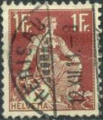
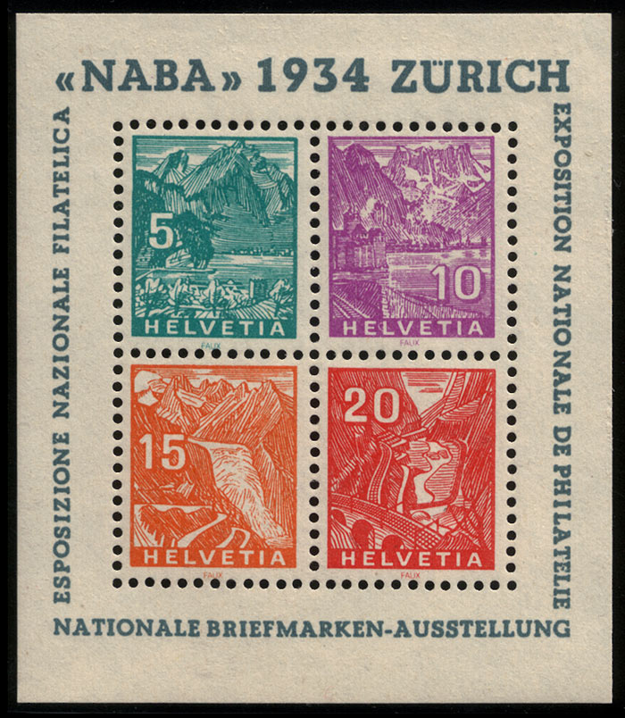

Return To Catalogue - Switzerland overview
Note: on my website many of the
pictures can not be seen! They are of course present in the
catalogue;
contact me if you want to purchase the catalogue.
Switzerland issues from 1882-1906. For Pro Juventute issues (1912 onwards), click here.
2 c yellow 3 c brown 5 c green
These stamps have part of silk threads in the paper and watermark 'Cross'.
Value of the stamps |
|||
vc = very common c = common * = not so common ** = uncommon |
*** = very uncommon R = rare RR = very rare RRR = extremely rare |
||
| Value | Unused | Used | Remarks |
| 2 c | c | c | |
| 3 c | * | * | |
| 5 c | * | vc | |
10 c red 12 c yellow 15 c violet
These stamps have part of silk threads in the paper and watermark 'Cross'.
Value of the stamps |
|||
vc = very common c = common * = not so common ** = uncommon |
*** = very uncommon R = rare RR = very rare RRR = extremely rare |
||
| Value | Unused | Used | Remarks |
| 10 c | * | vc | |
| 12 c | * | * | |
| 15 c | * | * | |



20 c red and yellow 25 c blue 30 c brown and green 35 c green and yellow 40 c violet and yellow 40 c violet and green (1924?) 40 c blue (1917?) 50 c green 60 c orange and yellow (1918) 70 c brown and yellow 70 c violet and orange (1924) 80 c grey and red (1915) 1 F red and green 3 F brown and yellow Surcharged

'20' (red) on 25 c blue '80' on 70 c yellow and brown (1915)
Air mail, postage stamps overprinted with wings and propellor in red (1919)

30 c brown and green 50 c green
The two types of the 40 c.
For the specialist: the 40 c violet and yellow exists in two types; the sword is slightly different in both types.The air mail stamps are known to be forged.
Value of the stamps |
|||
vc = very common c = common * = not so common ** = uncommon |
*** = very uncommon R = rare RR = very rare RRR = extremely rare |
||
| Value | Unused | Used | Remarks |
| 20 c | ** | vc | |
| 25 c | * | vc | |
| 30 c | * | c | |
| 35 c | * | c | |
| 40 c violet and yellow | *** | c | |
| 40 c violet and green | * | vc | |
| 40 c blue | ** | c | |
| 50 c | * | vc | |
| 60 c | * | c | |
| 70 c brown and yellow | *** | * | |
| 70 c violet and orange | ** | c | |
| 80 c | ** | c | |
| 1 F | *** | vc | |
| 3 F | RR | c | |
| Surcharged | |||
| 20 on 25 c | * | c | |
| 80 on 70 c | *** | * | |
| Airmail | |||
| 30 c | RR | RR | |
| 50 c | *** | *** | |
Since the airmail stamps are relatively rare, many forged overprints exist.
The values 50 c, 70 c violet and orange, 80 c and 1 F exist with overprint 'S.d.N. Bureau international du Travail'

Example of this 'S.d.N.
Bureau international du Travail' overprint
The values 50 c, 60 c, 70 c violet and orange, 80 c and 1 F exist overprinted with a large black cross, they are official stamps issued in 1938.
These stamps also exist with overprint 'Industrielle Kriegs-wirtschaft' (1918).
Overprinted 'Bela Szekula Luzern' dealer label made by the dealer
and stamp forger Szekula


10 c red 12 c brown 15 c purple Surcharged

'13' on 12 c brown
These stamps have perforation 11 1/2 and watermark 'Cross'.
Value of the stamps |
|||
vc = very common c = common * = not so common ** = uncommon |
*** = very uncommon R = rare RR = very rare RRR = extremely rare |
||
| Value | Unused | Used | Remarks |
| 10 c | * | vc | |
| 12 c | * | c | |
| 15 c | * | c | |
| Surcharged | |||
| 13 on 12 c | * | * | |
I've seen some labels (similar to the 1909 Tell's son issue, see there) with the image of the stamp and 'A.KOCHER & FILS LA CHAUX DE FONDS VEVEY' printed around it in a different color. I've seen: 10 c red (with red border), 10 c red (with blue border), 10 c red (with green border) and 10 c red (with lilac border). The labels are perforated.
2 c olive 2 1/2 c brown (1917) 2 1/2 c olive (1928) 3 c violet 3 c orange (1917) 3 c blue (1930) 5 c green 5 c orange on red 5 c violet 7 1/2 c grey (1917) 7 1/2 c green (1928)
These stamps have perforation 11 1/2.
Value of the stamps |
|||
vc = very common c = common * = not so common ** = uncommon |
*** = very uncommon R = rare RR = very rare RRR = extremely rare |
||
| Value | Unused | Used | Remarks |
| 2 c | c | vc | 3 types (see explanation below) |
| 2 1/2 c brown | c | vc | |
| 2 1/2 c olive | vc | vc | |
| 3 c violet | c | vc | 2 types |
| 3 c orange | c | vc | |
| 3 c blue | c | vc | |
| 5 c green | c | vc | light green (3 types) or green on yellow |
| 5 c orange on red | c | vc | |
| 5 c violet | c | vc | 2 shades of colour were issue (1924 and 1927) |
| 7 1/2 c grey | c | vc | 2 types |
| 7 1/2 c green | c | c | |
Surcharged


'1' and bars on 2 c olive (1915) '2 1/2' (blue) on 3 c orange (1921) '3' and bars on 2 1/2 c olive (1930) '5' and bars (red) on 2 c olive (1921) '5' on 7 1/2 c grey (1921) '5' and bars on 7 1/2 c green (1930)
The types, differing in the bow cord and the elliptical top part
of the bow (thicker and closer to the white line above it in the
last image).
Differences in the steps below the boy.
For the specialist: in the first printing of 1909 the cord of the bow passes in front of the center of this bow (it can be seen in the stamp), in the later printings it passes behind the center (invisible). Also some differenent types concerning the thickness of the steps the boy is standing on can be found.
Value of the stamps |
|||
vc = very common c = common * = not so common ** = uncommon |
*** = very uncommon R = rare RR = very rare RRR = extremely rare |
||
| Value | Unused | Used | Remarks |
| 1 c on 2 c | vc | vc | |
| 2 1/2 c on 3 c | vc | vc | |
| 3 c on 2 1/2 c | c | c | |
| 5 c on 2 c | c | vc | |
| 5 c on 7 1/2 c grey | c | c | |
| 5 c on 7 1/2 c green | c | c | |
I have seen the 5 c orange on red printed together with a 10 c green on red William Tell stamp (from a stamp booklet).
(Advertisement label? with the same image and 'A.KOCHER &
FILS LA CHAUX DE FONDS VEVEY')
I have also seen labels identical to the above
ones with the same inscription 'A.KOCHER & FILS' in the
values 2 c olive (green outer part), 2 c olive (red outer part,
see image above), 2 c olive (lilac outer part), 2 c olive (blue
outer part), 5 c green (red outer part), 5 c green (blue outer
part), 5 c green (lilac outer part) and 5 c green (green outer
part).
Similar labels exists for the '1908' Helvetia issue.
These stamps also exist with overprint 'Industrielle Kriegs-wirtschaft' (1918).
10 c green (1921) 10 c red 10 c violet (1930) 12 c brown 13 c green (1915?) 15 c violet 15 c brown (1928) 20 c violet (1921) 20 c orange (1924) 20 c red (1925) 25 c orange (1921) 25 c red (1922) 25 c brown (1925) 30 c blue (1924)
These stamps have perforation 11 1/2
Value of the stamps |
|||
vc = very common c = common * = not so common ** = uncommon |
*** = very uncommon R = rare RR = very rare RRR = extremely rare |
||
| Value | Unused | Used | Remarks |
| 10 c green | c | vc | Two shades of green were isssued (1921 and 1928) |
| 10 c red | c | vc | |
| 10 c violet | c | vc | |
| 12 c | c | * | |
| 13 c | c | vc | |
| 15 c violet | * | vc | Two shades of violet were issued (1914 and 1918) |
| 15 c brown | c | vc | |
| 20 c violet | c | * | |
| 20 c orange | c | vc | |
| 20 c red | c | vc | |
| 25 c orange | c | c | |
| 25 c red | c | vc | |
| 25 c brown | c | c | |
| 30 c | * | vc | |
surcharged

'10' (red) on 13 c green (1921) '13' on 12 c brown (1915) '20' (blue or black) on 15 c violet (1921)
Value of the stamps |
|||
vc = very common c = common * = not so common ** = uncommon |
*** = very uncommon R = rare RR = very rare RRR = extremely rare |
||
| Value | Unused | Used | Remarks |
| 10 c on 13 c | c | c | |
| 13 c on 12 c | c | c | |
| 20 c on 15 c | c | c | Blue or black overprint |
I've seen the 10 c green printed together with a 5 c orange on red William Tell's son 1909 stamp (from a stamp booklet).
These stamps also exist with overprint 'Industrielle Kriegs-wirtschaft' (1918).

Overprinted 'Bela Szekula Luzern' dealer label made by the dealer
and stamp forger Szekula
3 F green 3 F red (1918) 5 F blue 10 F violet 10 F green (1930)
Value of the stamps |
|||
vc = very common c = common * = not so common ** = uncommon |
*** = very uncommon R = rare RR = very rare RRR = extremely rare |
||
| Value | Unused | Used | Remarks |
| 3 F green | R | c | |
| 3 F red | ** | c | |
| 5 F | *** | c | Re-issued in 1928 with new engraving |
| 10 F violet | *** | c | |
| 10 F green | *** | ** | |

3 F brown in similar design (issued in 1931)
7 1/2 c green 10 c red and yellow 15 c violet and yellow
These stamps have perforation 11 1/2.
Value of the stamps |
|||
vc = very common c = common * = not so common ** = uncommon |
*** = very uncommon R = rare RR = very rare RRR = extremely rare |
||
| Value | Unused | Used | Remarks |
| 7 1/2 c | c | c | |
| 10 c | c | c | |
| 15 c | c | c | |
1924 issue, arms of Switzerland, surrounded by mountains and
clouds
90 c green and red 1.20 F brown and red 1.50 F blue and red on blue 2 F black and red on grey
All the above stamps exist with overprint 'S.d.N. Bureau international du Travail'.
These stamps overprinted with a large black cross are official stamps issued in 1938.
20 c red 30 c blue
3 F brown
3 F brown
5 c green 10 c orange 20 c lilac 30 c blue 60 c brown 1 F blue and grey
All the above stamps exist with overprint 'S.d.N. Bureau international du Travail'
Airmail 15 c green and grey 20 c red and lilac 90 c blue and grey
3 c olive (Lauterbrunn valley) 5 c blue 10 c violet (Chillon castle and mountains) 15 c orange 20 c red (Gotthard railway) 25 c brown 30 c blue (Schaffhausen waterfall)
The values 5 c, 10 c, 15 c and 20 c were issued in a minisheet for the NABA philatelic exhibition in 1934.
Slightly different designs, value in lower left corner (1936) 3 c olive 5 c blue 5 c brown 10 c violet (Chillon castle and mountains) 10 c green (Chillon castle and mountains) 10 c brown Chillon castle and mountains) 15 c orange 20 c red (Gotthard railway) 20 c brown 25 c brown 25 c red 30 c blue (Schaffhausen waterfall) 35 c green 40 c black 40 c blue
The values 3 c olive, 5 c blue, 10 c violet, 15 c orange, 20 c red, 25 c brown, 30 c blue, 35 c green and 40 c black exist overprinted with a black cross (official stamps, 1938). Furthermore the values 3 c olive, 5 c blue, 10 c brown, 15 c orange, 20 c red, 25 c brown, 30 c blue, 35 c green and 40 c black exist overprinted with 'Officiel' (slanting, official stamps of 1942).

Peter Winter forgery of the NABA Zurich exhibition sheet, the
word 'FAUX' is written at the bottom of each stamp.


{kind=link}
{kind=link}
{kind=link}
{kind=link}
{kind=link}